Certificados e Habilitações
 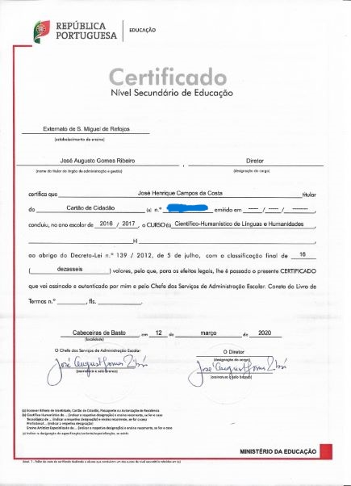
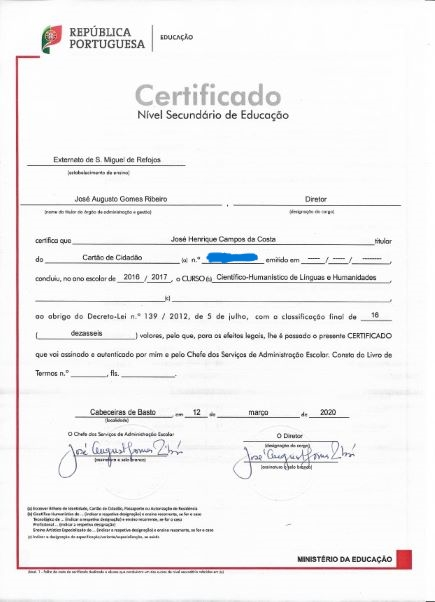
 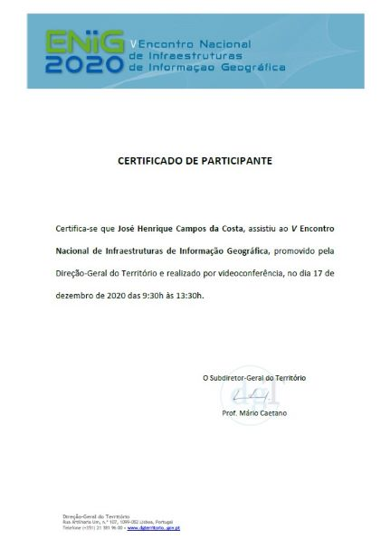
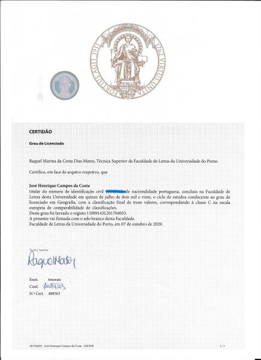
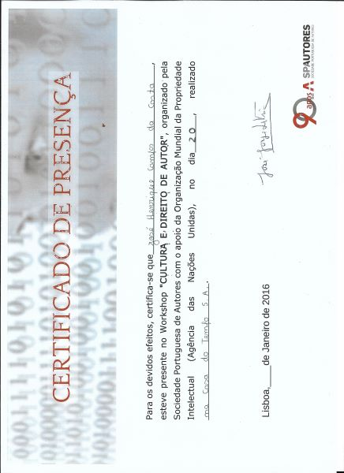
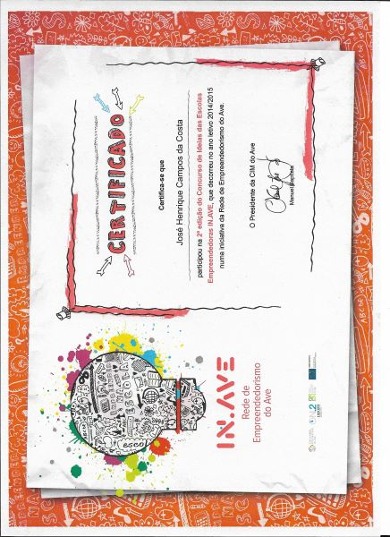
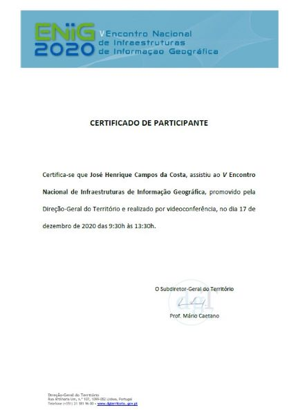
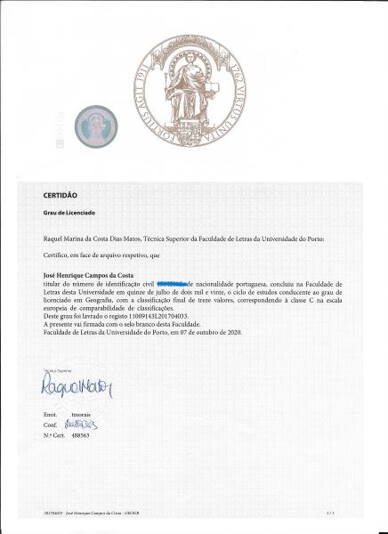
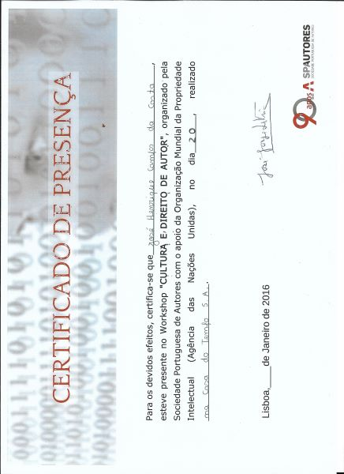
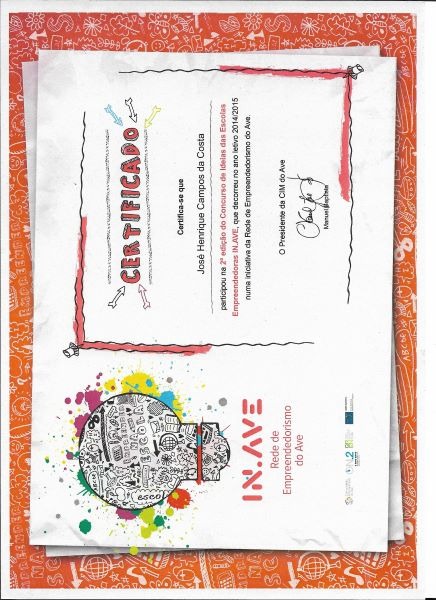
Informações Pessoais
Data de nascimento: 27 - 11 - 1999
"Sou natural de Cavez, freguesia do concelho de Cabeceiras de Basto, desde cedo despertei o gosto pela Natureza e o modo de vida local. A meu percurso enquanto profissional tem assim uma mistura do bom que a cidade oferece com os prazeres da vida no campo. Recentemente tenho traçado caminho entre o Porto e Cabeceiras, com o objetivo de completar a minha formação enquanto Geógrafo. A família e amigos são o meu maior suporte para superar as adversidades. Gosto de viajar e anseio poder um dia ir ao Brasil, para já apenas destinos europeus."
Conhecimentos: Arcgis; Google Earth, Visual Studio Code, PostGreSQL
Atualmente no Mestrado de SIG e Ordenamento do Território
Para mais detalhes sobre mim descarregar o CURRICULUM VITAE
Percurso Académico
Certificados e Habilitações
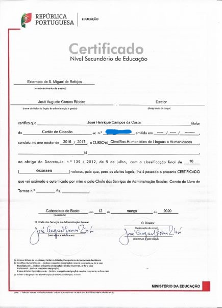
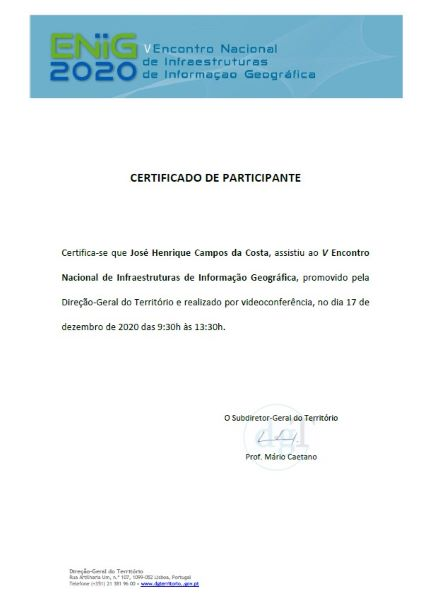
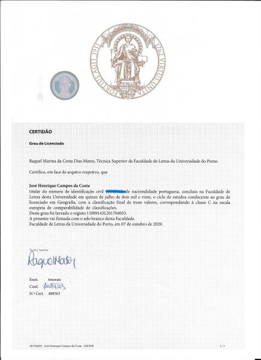
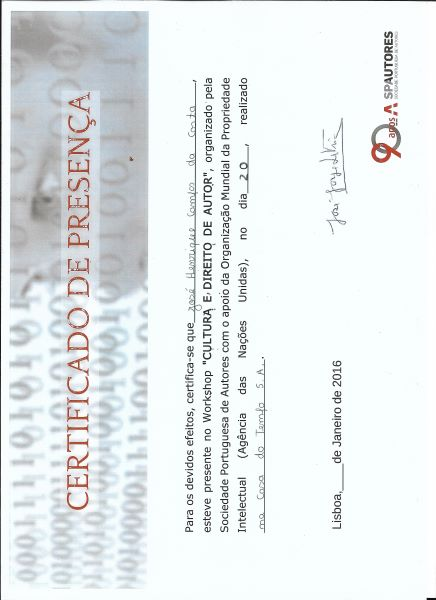
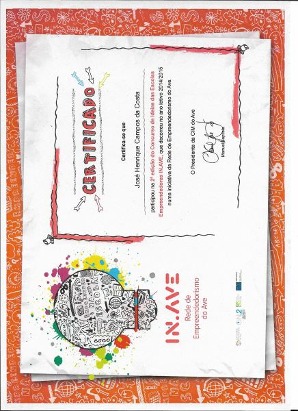
Portefólio Académico
"ANÁLISE MULTIRISCO APLICADA ÀS VERTENTES A MONTANTE DA ESTRADA MUNICIPAL nº518 JUNTO A ABOIM DAS CHOÇAS, ARCOS DE VALDEVEZ"
GEOMORFOLOGIA
"PROCESSAMENTO E ANÁLISE DE IMAGENS E DADOS SATÉLITE, NO CONCELHO DE MONÇÃO"
DETEÇÃO REMOTA
APLICADA AO ORDENAMENTO
DO TERRITÓRIO
Hobbies e tempos livres
 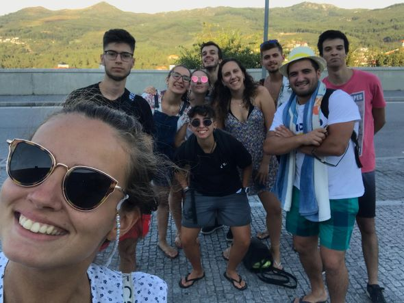
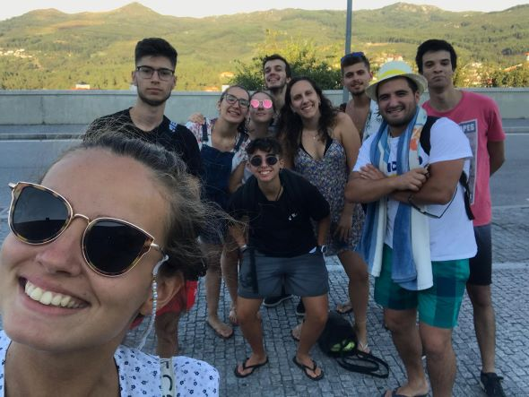

Análise de movimentos de vertente em
Cabeceiras de Basto
Carateristicas morfogeológicas da
Quinta do Seixo (Tabuaço)
-Os movimentos de vertente representao um problema grave da sociedade. Com o aumento das áreas habitacionais e das estruturas de apoio à atividade humana, cresce também a preocupação com o ordenamento do território.
-Neste WebSiG estão mensionados alguns dos locais de instabilidades ao longo de algumas vias rodoviárias no concelho de Cabeceiras de Basto. Este facto merece especial atenção quando representa um perigo direto à segurança de quem nelas circula.
-Cabeceiras de Basto é um concelho no Norte de Portugal, marcadamente montanhoso, no qual este evento ocorre com alguma frequência causando danos ás populações. São representadas características físicas e microclimáticas deste territorio, como a rede Hidrográfica, e as estações metereológicas e a rede simplificada de estradas. Com o auxílio dos Mapas base, temos ainda possibilidade de reconhecer outras formas de relevo, com o ortofotomapa e o mapa de curvas de nível (elevação).
-Este segundo projeto nasce no âmbito de um trabalho de investigação realizado pelo Centro de estudos geográficos para a Sogrape, com o tema base relativo a "instabilidade de taludes" na Quinta do Seixo(Douro interior).
-Como tarefas a desenvolver neste sentido, destacam-se a medição da condutividade hidráulica saturada, da infiltração, a realizaçao de uma recolha in loco de sulcos e marcas de movimentação e instabilidade, e por fim a análise laboratorial de Amostras de Solos.
-Este WebSiG retrata alguns desses elementos estudados e o faz um enquadramento geral das carateristicas da àrea de estudo. Concretamente são expostos alguns dos resultados laboratoriais efetuados para 14 amostras de solo e ainda parâmetros usados na medição da condutividade Hidraulica saturada.